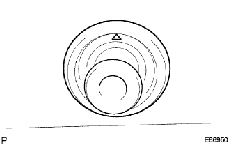

Removal Rear Waipa Motor ASSY |
| 1. Remove the rear waiper arm head cap |
| 2. Remove the rear wiping arm |
Remove the nut and remove the rear wiperem.
| 3. Remove the rear wai pamot glomet |
|  |
Remove the rear wai pamota grometto.
| 4. Remove the backdoor trim board |
 |
Remove the nine clips and remove the Batsukudo Atlim board.
| 5. Remove the rear wai motor ASSY |
Cut the connector.
 |
Remove the three bolts and remove the rear wai porota ASSY.